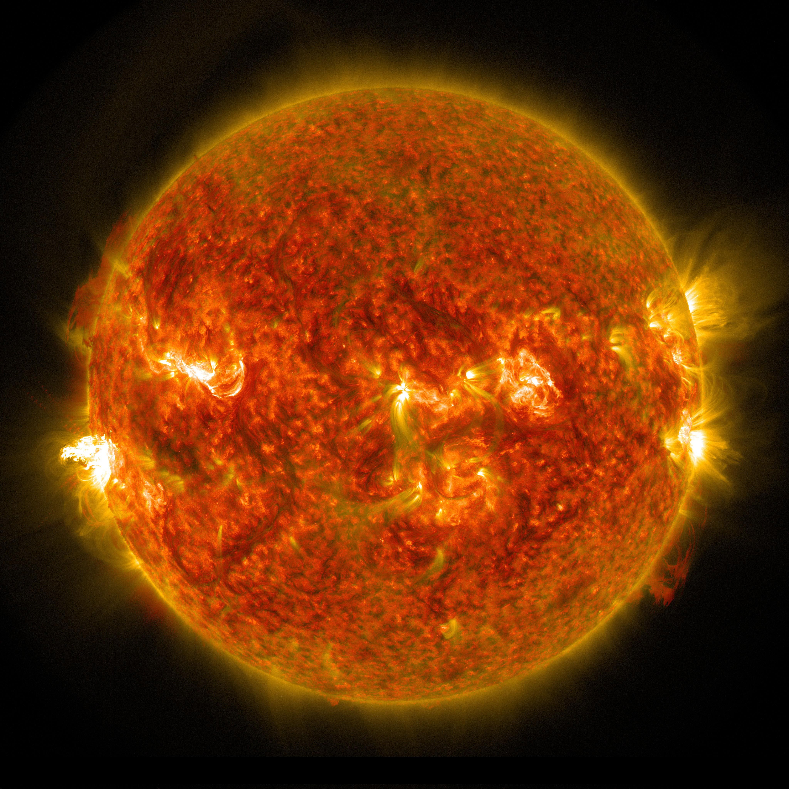

Bintang
Dilansir dari Wikipedia Bintang merupakan benda langit yang memancarkan cahaya yang disebabkan oleh reaksi fusi nuklir yang menghasilkan energi yang terjadi di intinya. Perlu diperhatikan bahwa 'bintang semu' bukanlah bintang, tetapi planet yang memantulkan cahaya dari bintang lain dan terlihat bercahaya di langit seperti sebuah bintang.
Menurut ilmu astronomi, definisi bintang adalah: Semua benda masif (bermassa antara 0,08 hingga 200 massa matahari) yang sedang dan pernah melangsungkan pembangkitan energi melalui reaksi fusi nuklir. Oleh sebab itu bintang katai putih dan bintang neutron yang sudah tidak menghasilkan energi tetap disebut sebagai bintang. Bintang terdekat dengan Bumi adalah Matahari pada jarak sekitar 149,680,000 kilometer, diikuti oleh Proxima Centauri dalam rasi bintang Sentaurus berjarak sekitar empat tahun cahaya.
Sejarah Pengamatan
Bintang-bintang telah menjadi bagian dari setiap kebudayaan. Bintang-bintang digunakan dalam praktik-praktik keagamaan, dalam navigasi, dan bercocok tanam. Kalender Gregorian, yang digunakan hampir di semua bagian dunia, adalah kalender Matahari, mendasarkan diri pada posisi Bumi relatif terhadap bintang terdekat, Matahari.
Astronom-astronom awal seperti Tycho Brahe berhasil mengenali ‘bintang-bintang baru’ di langit (kemudian dinamakan novae) menunjukkan bahwa langit tidaklah kekal. Pada 1584 Giordano Bruno mengusulkan bahwa bintang-bintang sebenarnya adalah Matahari-matahari lain, dan mungkin saja memiliki planet-planet seperti Bumi di dalam orbitnya, ide yang telah diusulkan sebelumnya oleh filsuf-filsuf Yunani kuno seperti Democritus dan Epicurus. Pada abad berikutnya, ide bahwa bintang adalah Matahari yang jauh mendapat kesepakatan di antara para astronom. Untuk menjelaskan mengapa bintang-bintang ini tidak memberikan tarikan gravitasi pada tata surya, Isaac Newton mengusulkan bahwa bintang-bintang tersebar secara merata di seluruh langit, sebuah gagasan yang berasal dari teolog Richard Bentley.
Astronom Italia Geminiano Montanari merekam adanya perubahan luminositas pada bintang Algol pada 1667. Edmond Halley menerbitkan pengukuran pertama gerak diri dari sepasang bintang “tetap” dekat, memperlihatkan bahwa mereka berubah posisi dari sejak pengukuran yang dilakukan Ptolemaeus dan Hipparchus. Pengukuran langsung jarak bintang 61 Cygni dilakukan pada 1838 oleh Friedrich Bessel menggunakan teknik paralaks.
William Herschel adalah astronom pertama yang mencoba menentukan sebaran bintang di langit. Selama 1780an ia melakukan pencacahan di sekitar 600 daerah langit berbeda. Ia kemudian menyimpulkan bahwa jumlah bintang bertambah secara tetap ke suatu arah langit, yakni pusat galaksi Bima Sakti. Putranya John Herschel mengulangi pekerjaan yang sama di belahan bumi langit sebelah selatan dan menemukan hasil yang sama. Selain itu William Herschel juga menemukan bahwa beberapa pasangan bintang bukanlah bintang-bintang yang secara kebetulan berada dalam satu arah garis pandang, melainkan mereka memang secara fisik berpasangan membentuk sistem bintang ganda.
Bintang Variabel
Bintang variabel adalah bintang yang luminositasnya berubah-ubah baik secara berkala maupun secara acak, yang disebabkan oleh faktor dari dalam maupun luar bintang tersebut. Bintang-bintang variabel yang diakibatkan faktor dalam bintang itu sendiri dapat digolongkan dalam tiga kategori utama.
Jenis yang pertama adalah bintang variabel berdenyut. Dalam evolusi bintang, beberapa bintang memasuki fase di mana mereka dapat berubah menjadi bintang variabel berdenyut. Bintang variabel jenis ini berubah-ubah radius dan luminositasnya sepanjang waktu, mengembang dan mengerut dengan selang waktu dari beberapa menit hingga bertahun-tahun, tergantung ukuran bintang tersebut. Kategori ini termasuk bintang variabel chepeid dan mirip chepeid, serta bintang variabel periode panjang seperti Mira.

Yang kedua adalah bintang variabel eruptif, yaitu bintang yang mengalami lonjakan luminositas tiba-tiba akibat peristiwa semburan maupun peristiwa pelontaran materi bintang yang berlangsung massal. Kategori ini termasuk protobintang, bintang Wolf-Rayet dan bintang suar serta bintang raksasa dan maharaksasa.
Yang terakhir adalah bintang variabel eksplosif atau kataklismis termasuk di antaranya bintang nova dan supernova. Sistem bintang biner yang salah satu di antara bintangnya adalah katai putih, dapat menghasilkan ledakan jenis tertentu secara luar biasa, termasuk nova dan supernova tipe 1a. Ledakan tersebut tercipta ketika katai putih menyedot hidrogen dari bintang pasangannya, meningkatkan massanya hingga hidrogen di dalamnya mengalami fusi. Beberapa nova terjadi berulang-ulang, dengan ledakan berkala yang memiliki amplitudo rendah.
Bintang juga dapat berubah-ubah luminositasnya akibat faktor-faktor luar, misalnya bintang biner gerhana, juga bintang yang memiliki bintik bintang yang luar biasa dan berotasi. Contoh paling terkenal bintang biner gerhana adalah Algol yang biasanya berubah-ubah magnitudonya antara 2,5 sampai 3,5 dengan periode 2,87 hari.